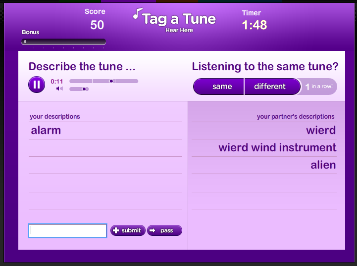

Tag a Tune goes live
Tag a tune
- an ESP-Type game for labeling music has gone live. It is not the
first game to collect tags for music, but I think it is perhaps the most
fun. The game is well polished, easy to learn and potentially
addictive to play. My current high score is 6800. Check it out.

Wow, it really is polished. And it's fun too. Except for the part where you need to choose from 3 completely different sounds which one is most different.
However, I doubt that the collected tags will be very accurate descriptions of the music.... because it's really hard to accurately describe music given only a few seconds of it to listen to. Even more so if you are asked to describe music you are not familiar with under time pressure.
Furthermore, it seems it's not that hard to get most of the answers right quickly using only a very limited vocabulary. E.g. using: female, male, instrumental, classical, electronic seemed to be enough to get an agreement on most cases within seconds.
Posted by elias on May 14, 2008 at 06:32 PM EDT #
Ha!
My friend reported that the partner he was playing against started cheating by typing in "Same" or "Different" for each song (slipping his answer across the table to his partner).
That may make the data a little noisy in the end.
Too funny.
Posted by Zac on May 15, 2008 at 09:37 AM EDT #